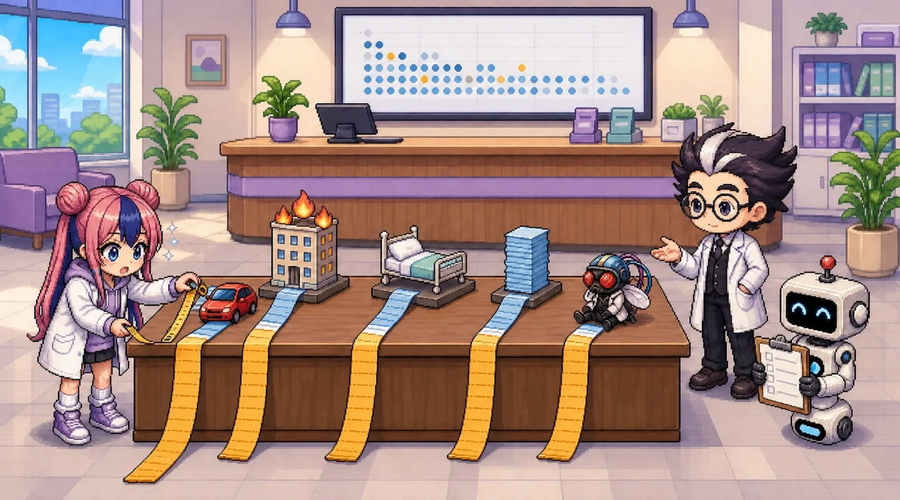

과제 문항 5Assignment 5
무엇을 내야 하는지 먼저 확인합니다.
유사 사례를 찾고, 그 이유 및 해결 전략 기술
- 실제 산업 · 학계에서 오른쪽 꼬리가 긴 금액 타깃 + 소수 집단이 고액을 좌우하는 구조의 회귀 사례를 2건 이상 찾음 (의료비 예측, 자동차보험 손해액, 주택 가격, 보험료 산정의 공정성 등)
- 각 사례마다 (a) 요약과 출처, (b) 이 데이터와 구조적으로 같은 점, (c) 왜 그런 문제가 생기는지, (d) 실무에서 쓰는 해결 전략(감마 · 트위디 GLM, 분위 회귀, 로그 변환 등)을 기술
- 마지막에 본 과제 데이터에 적용할 수 있는 해결 전략 우선순위 3개 이내로 정리
이 편은 사례 4건을 준비했습니다: 자동차보험 손해액 · 재보험 대형사고 · 병원 재원일수 · 의료비 지출 집중. 출처는 모두 직접 열어 확인했고, 공개 데이터가 있는 두 사례는 데이터 파일을 직접 읽어 꼬리 비율을 우리 데이터와 같은 방법으로 계산했습니다. 학생은 출처를 직접 열어 보고 본인 말로 다시 쓰세요.
1부 4편 복습여유분과 비용 실험실
과소 추정 1달러를 과대 추정 1달러보다 3배 비싸게 보는 실험실. 꼬리가 긴 금액에서 ‘적게 잡는’ 비용을 다룹니다.
먼저 우리 데이터의 꼬리Our baseline tail
사례와 비교할 기준: 같은 지표를 우리 데이터에서 먼저 잽니다.
꼬리 비율(tail share)은 금액이 큰 사람부터 줄을 세웠을 때 앞쪽 몇 %가 전체 금액의 몇 %를 차지하는지입니다. 모두 같은 금액이면 상위 1%는 1%를 차지합니다(대각선). 위로 볼록할수록 소수에게 몰린 것입니다.
흡연자는 사람의 20.5% 이지만 금액의 49.5% 를 씁니다. 우리 데이터에서 ‘금액을 좌우하는 소수 집단’은 흡연자, 그중에서도 BMI 30 이상인 사람들입니다(1부 1편의 맨 위 띠).
사례 네 건Four similar cases
버튼으로 사례를 바꿔 보세요. 각 사례는 (a) 요약 · 출처 (b) 같은 점 (c) 왜 생기나 (d) 실무 전략 순서입니다.
사례의 숫자는 각 출처의 값이거나, 공개 데이터 파일을 f5.py 로 직접 계산한 값입니다. 어느 쪽인지 사례마다 ‘숫자 메모’에 적었습니다. 사례 논문이 데이터를 자르거나 합성했더라도 이 시리즈는 증강 · 합성 · 목표값 자르기를 쓰지 않습니다.
한 표로 비교Side by side
같은 잣대(꼬리 비율)로 나란히 놓으면 우리 데이터의 위치가 보입니다.
| 사례 | 건수 | 상위 1% 비율 | 상위 10% 비율 | 평균 ÷ 중앙값 | 숫자 출처 |
|---|---|---|---|---|---|
| 우리 데이터 (건강보험 의료비) | 1,337 | 3.9% | 31.8% | 1.41 | 직접 계산 (f5) |
| 자동차보험 손해액 (freMTPL2sev) | 26,444 | 38.0% | 59.9% | 1.93 | 직접 계산 (f5) |
| 재보험 대형사고 (danish) | 2,167 | 17.2% | 46.0% | 1.90 | 직접 계산 (f5) |
| 병원 재원일수 (Freitas 2012) | 9,253,087 | — | 상위 3.9% → 19.2% | — (평균: 이상치 35.5일 · 나머지 6.0일) | 논문 값 |
| 의료비 지출 집중 (MEPS 2022) | — | 21.7% | 65.9% | — | 보고서 값 |
공통 구조
네 사례 모두 금액(또는 기간)이 오른쪽으로 길고, 소수가 전체의 큰 몫을 차지합니다. 그래서 평균 하나로 보고하면 소수의 큰 값이 숨고(1부 1편), 오차가 큰 사람도 소수에 몰립니다(2부 2편).
우리 데이터의 위치
우리 데이터의 꼬리는 가벼운 편입니다: 상위 1% 비율 3.9% 는 자동차보험(38.0%) · 재보험(17.2%) · MEPS(21.7%)보다 훨씬 작습니다. 최댓값이 $63,770 에서 멈추고 0 원도 없기 때문입니다. 대신 ‘흡연’이라는 한 집단이 금액의 절반을 가집니다.
그래서 전략도 다르다
꼬리가 아주 무거운 재보험은 극값 이론(EVT)이 필요하지만, 우리 데이터는 그 전에 소수 집단의 모양(흡연 × 비만)을 모델에 넣는 것이 먼저입니다. 꼬리의 무게를 재고 전략을 고릅니다.
해결 전략 우선순위 3개Priorities for this data
과제의 마지막 요구: 본 과제 데이터에 적용할 전략, 3개 이내.
| 우선순위 | 무엇을 | 확인 지표 | 사례 근거 |
|---|---|---|---|
| 1. 소수 집단의 모양을 모델에 넣기 | 흡연 × 비만(BMI 30 이상) 상호작용, 또는 경계를 스스로 찾는 트리 모델 | 흡연자 MAE · 상위 10% MAE (2부 2 · 3편) | MEPS: 고액 지출자 집단의 특성을 따로 분석 · 우리 데이터: 흡연자 20.5% 가 금액의 49.5% |
| 2. 평균 하나로 보고하지 않기 | 그룹별 · 금액 구간별 오차, 과소 추정 비율과 비용(과소 : 과대 = 3 : 1) | 그룹별 MAE · 평균 잔차 · 과소 추정 비용 (2부 2편, 1부 4편) | Freitas 2012: 3.9% 의 장기 재원이 입원일수의 19.2% — 평균만 보면 숨는다 |
| 3. 목표 분포에 맞는 손실 · 모델 고르기 | 감마 · 트위디 GLM 또는 분위 회귀. 로그 변환은 달러로 되돌려 그룹별로 검증. 극단 꼬리(EVT)는 이 데이터에는 아직 필요 없음 | 달러 기준 5-Fold MAE · R² · 그룹별 역변환 편향 (2부 1 · 4편) | freMTPL: 심도에 감마 GLM · McNeil 1997: 극단 꼬리는 따로. 우리 상위 1% 비율은 3.9% 로 가벼운 편 |

3번에 ‘EVT 는 아직 필요 없음’이라고 쓴 게 마음에 들어요. 무조건 어려운 걸 쓰는 게 아니네요.

(손바닥을 든다) …꼬리 비율을 먼저 재고 고른 겁니다. 상위 1% 가 3.9% 인 데이터와 38.0% 인 데이터는 같은 약을 먹지 않습니다.
보고서 답안 틀Answer template
사례마다 같은 칸을 채웁니다. 빈칸은 본인이 확인한 출처의 값으로.
표 1. 사례 요약 (사례 2건 이상)
| 사례 1 | 사례 2 | |
|---|---|---|
| 분야 · 사례 이름 | ＿＿ | ＿＿ |
| (a) 요약 · 출처(제목 · 저자/기관 · 연도 · URL) | ＿＿ | ＿＿ |
| 꼬리 지표(상위 ＿% 가 ＿% 차지 등) | ＿＿ | ＿＿ |
| (b) 이 데이터와 같은 점 | ＿＿ | ＿＿ |
| (c) 왜 생기나 | ＿＿ | ＿＿ |
| (d) 실무 해결 전략 | ＿＿ | ＿＿ |
서술 틀. “우리 데이터는 상위 1%가 금액의 ＿＿%, 흡연자(＿＿%)가 금액의 ＿＿%를 차지한다. 사례 ＿＿ 에서는 ＿＿ 가 ＿＿% 를 차지해 꼬리가 (더 무겁다 / 더 가볍다). 따라서 본 과제에는 ① ＿＿(확인 지표 ＿＿) ② ＿＿(＿＿) ③ ＿＿(＿＿) 순서로 적용한다.”
출처의 숫자와 본인이 계산한 숫자를 구분해 쓰세요. 서로 다른 해의 숫자를 섞었으면 그렇다고 쓰세요.
확인 문제Check
정답을 고르면 이 페이지의 실제 숫자로 해설합니다.
Q1. 우리 데이터의 상위 1% 비율은 3.9%, 프랑스 자동차보험 손해액은 38.0% 입니다. 가장 알맞은 해석은?
Q2. scikit-learn 의 자동차보험 예제는 손해액을 200,000 에서 잘라(clip) 학습합니다. 이 시리즈에서 같은 일을 하지 않는 이유는?
Q3. 포르투갈 병원 연구에서 장기 재원 3.9%가 입원일수의 19.2%를 차지했습니다. 평균 재원일수만 보고하면 생기는 문제는?
Q4. MEPS 2022 에서 하위 50%는 의료비의 2.8%만 썼지만, 우리 데이터의 하위 50%는 18.5% 를 씁니다. 가장 그럴듯한 이유는?
실무로 잇기From page to Colab
이 페이지의 꼬리 비율을 만든 코드.
e5.py 는 함수 · 반복문 · if · 들여쓰기 없이 우리 데이터의 꼬리 비율과 그룹별 금액 비율, 집중 곡선을 그립니다. 맨 위 [다이얼]로 상위 몇 % 를 볼지와 그룹 열을 바꿉니다. f5.py 는 같은 지표를 공개 데이터 두 개(freMTPL2sev · danish)에서도 계산합니다(Colab 에서는 pip install pyreadr 필요, 없으면 우리 데이터만 계산).
실행 결과 보기 (정식 코드 f5.py 를 실제로 실행한 출력)
[ours] n=1337 mean=13279 median=9386 max=63770 mean/median=1.41 skew=1.52 top 1% share=0.0393 top 10% share=0.3179 bottom 50% share=0.1853 smokers: 20.5% of people, 49.5% of total charges [freMTPL2sev] n=26444 mean=2265.51 median=1172.00 max=4075400.56 mean/median=1.93 top 1% share=0.3799 top 10% share=0.5992 bottom 50% share=0.1510 [danish] n=2167 mean=3.39 median=1.78 max=263.25 mean/median=1.90 top 1% share=0.1721 top 10% share=0.4597 bottom 50% share=0.1986
사례 카드 전체는 data/cases.json 에 있습니다(부록 B 형식, 회귀용 tail_share · top10_share 사용).
AI와 함께 더 공부하기AI tutor prompt
ChatGPT·Claude·Gemini 등에 그대로 붙여 넣으세요. [ ] 안만 바꾸면 됩니다.
# 역할 당신은 보험 데이터 분석을 가르치는 친절한 튜터입니다. 저는 「AI(인공지능) x 비즈니스 #1 인슈어테크_04_회귀모델_실전」 2부 5편(과제 문항 5) 「꼬리가 긴 금액은 어디에나 있다」을 공부하고 있습니다. # 배경 - 데이터: 공개 학습용 건강보험 의료비 데이터 1,338행 (https://raw.githubusercontent.com/fintech-data/Revolution/main/data/insurance.csv) - 열: age(나이) · sex(성별) · bmi(체질량지수) · children(자녀 수) · smoker(흡연 여부) · region(미국 내 지역 4곳) · charges(1년 의료비 청구 금액, 달러 = 맞힐 대상) - 완전히 같은 행 1건을 빼고 1,337행을 씁니다. 목표값 charges 는 자르거나 고치지 않습니다(고액은 오류가 아니라 꼬리). - 검증은 charges 10분위로 층화한 StratifiedKFold(n_splits=5, shuffle=True, random_state=42) 입니다. fold별 점수 5개와 평균 ± 표준편차를 냅니다. - 기준선: 모두에게 학습 데이터 평균만 답하기 (R² = 0 근처) - 내 수준: [예: 파이썬은 조금, 통계는 처음] # 해 줄 일 1. 오른쪽 꼬리가 긴 금액 + 소수 집단이 고액을 좌우하는 실제 사례를 2개 찾아 주되, 반드시 열어 볼 수 있는 출처(제목 · 저자/기관 · 연도 · URL)를 함께 주세요. 확인할 수 없는 숫자는 쓰지 마세요. 2. 각 사례의 꼬리 지표(상위 1% 또는 10% 가 차지하는 비율)를 우리 데이터와 같은 방법으로 비교하는 표를 만들어 주세요. 3. 사례마다 (a) 요약 (b) 같은 점 (c) 왜 생기나 (d) 실무 전략을 정리하고, 증강 · 합성 · 목표값 자르기는 쓰지 않는다는 원칙과 충돌하는 전략이 있으면 표시해 주세요. 4. 제 데이터에 적용할 전략 우선순위 3개와 각각의 확인 지표를 제안해 주세요. # 반드시 지킬 것 - 기호나 약어(MAE, RMSE, R² 등)는 처음 나올 때 한 줄로 설명하기 - 데이터 증강(합성 행 · 행 복제 · 정답에 잡음 넣기)은 쓰지 않기 - 전처리(표준화 · 인코딩)는 Pipeline 안에서 학습 데이터에만 fit (데이터 누수 금지) - 여유분 · 하이퍼파라미터는 학습 데이터의 교차검증으로만 고르기 (시험 데이터는 마지막에 한 번만) - R² 하나만 보고하지 않기: MAE · RMSE · 고액(상위 10%) MAE · 과소 추정 비율을 기준선과 함께 - 로그 변환을 썼다면 예측을 달러로 되돌려 평가하기 - 코드는 Google Colab 에서 바로 실행되게, random_state=42 고정, 내가 바꿀 줄에는 # [변경] 주석 내 결과: [숫자 붙여 넣기 — fold별 점수와 평균 ± 표준편차] 내가 쓴 문장: [붙여 넣기] # 답변 형식 1) 내 숫자를 기준선과 비교해 해석 2) 내 문장에서 틀리거나 과장된 곳 3) 답을 바로 주기 전에, 내가 스스로 확인할 질문 3개
용어 사전Glossary
비유로 먼저, 뜻은 그다음.
- 꼬리 비율 (tail share)
- 앞줄 몇 명이 몫을 얼마나 가져가나. 금액 큰 순서로 상위 p% 가 전체 금액에서 차지하는 비율. 우리 상위 1% = 3.9%.
- 집중 곡선
- 볼록할수록 몰려 있다. 가로 = 사람 비율(큰 금액부터), 세로 = 누적 금액 비율. 대각선 = 모두 같은 금액.
- 심도 (severity)
- 사고 한 건의 크기. 보험에서 사고 1건당 손해액. 빈도(건수)와 나눠 모델링한다.
- 감마 GLM
- 양수 금액용 회귀. 금액이 0 보다 크고 오른쪽으로 긴 분포를 가정한 일반화 선형 모델.
- 트위디 GLM
- 0 과 금액을 한 번에. 0 이 많고 나머지는 양수 금액인 순보험료를 한 모델로 맞힌다.
- 극값 이론 (EVT)
- 꼬리 끝만 따로 보기. 임계값을 넘는 큰 손해에 일반화 파레토 분포를 맞춘다(McNeil 1997).
- 분위 회귀
- 평균 대신 상위 몇 % 를 맞히기. 예: 75% 분위 = 4명 중 3명은 이보다 적게 쓰는 금액. 1부 4편의 비용 비 3 : 1 과 연결.
- 2단계 모델
- 쓸까, 얼마나. 0 원이 많은 데이터에서 ‘청구 여부’ 분류와 ‘청구 금액’ 회귀를 나눠 곱한다.
글 · 안상선 ((주)M-Robo 대표)
(주)M-Robo 대표. 금융·보험 데이터와 AI를 현장에서 쓰는 방법을, 버튼만 눌러 따라 할 수 있는 교재로 만듭니다.
수고하셨습니다!

- 꼬리 비율로 비교: 상위 1% 가 우리 3.9% · 자동차보험 손해액 38.0% · 재보험 화재 17.2% · 미국 의료비(MEPS) 21.7%
- 공통 구조: 소수가 큰 몫을 가진다. 우리 데이터에서는 흡연자 20.5% 가 금액의 49.5%
- 그래서 전략 순서: ① 소수 집단의 모양을 모델에 ② 그룹별 · 구간별 오차 보고 ③ 분포에 맞는 손실 — 꼬리 무게를 재고 고른다
사례를 찾을 때 숫자를 직접 다시 계산해 보니까, 출처를 믿는 것과 확인하는 것이 다르다는 걸 알았어요.
그런데 진짜 의료비는 0 원인 사람이 절반 가까이일 텐데요? 그런 데이터면 ‘얼마나’보다 ‘쓸까 말까’부터 맞혀야 하지 않아요? 저는 두 달 사는 동안 병원비가 0 원이라 궁금해요.